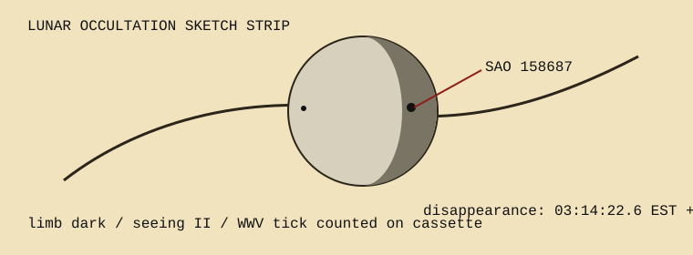

Target noted as SAO 158687. Disappearance at the dark limb was called out by voice, recorded on cassette with WWV in the background. The final time was reduced later at the kitchen table, after subtracting the operator's reaction estimate.
| Event | Observed | Correction | Adopted |
|---|---|---|---|
| D | 03:14:23.0 EST | -0.4 sec | 03:14:22.6 |
| R | not seen | cloud bank | discarded |
Margin note: “do not use porch step; tremor enters telescope at exactly the wrong second.”